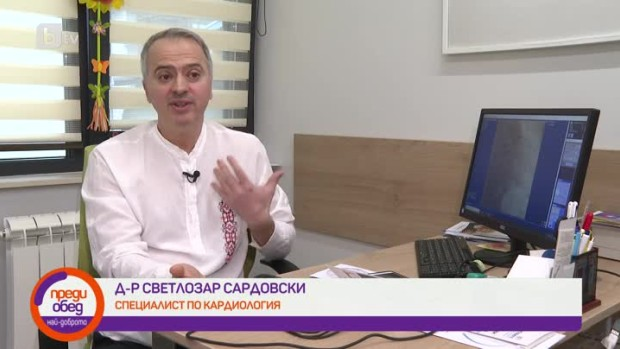
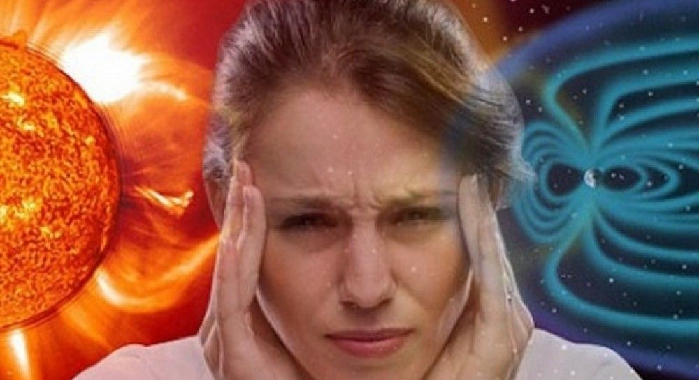
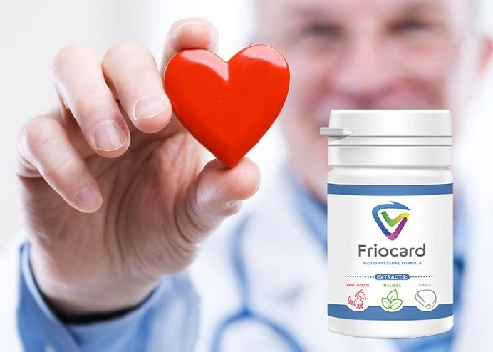
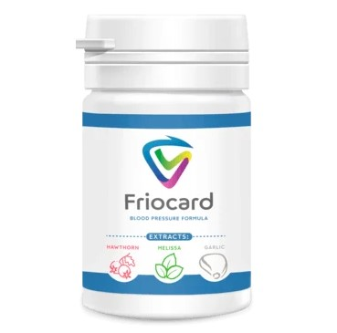
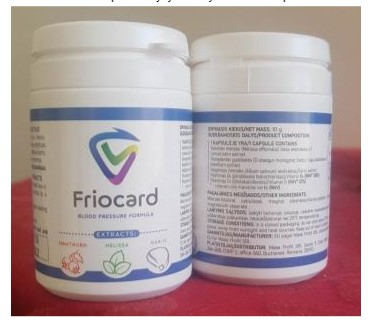
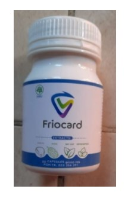
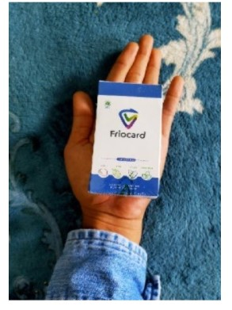

Магнитни бури в България: как хората, страдащи от хипертония, спокойно да преживеят магнитна буря без риск от инфаркт
Магнитните бури представляват опасност за хора на средна и по-голяма възраст, страдащи от хипертония и коронарна болест на сърцето. Магнитни бури на първо място трябва да бъдат защитени от лица, страдащи от хипертония и коронарна болест на сърцето, т.е. пациенти с сърдечна патология. Тези хора трябва да следят нивата на кръвното налягане, тъй като по време на магнитни бури налягането може да се понижи и да се повиши.
Мнозина със скептицизъм се отнасят до влиянието на магнитните бури върху човешкото здраве. Учените обаче отдавна са идентифицирали връзката между геомагнитните бури и състоянието на тялото, или по-скоро налягането. Така че, последното проучване е проведено през 2020 година. Той включваше мъже и жени на възраст между 18 и 27 години, страдащи от хипертония, т.е. повишено налягане. Учените са наблюдавали състоянието на хората по време на голяма магнитна буря. В резултат на това изследователите успяха да разкрият връзката между систоличното и диастоличното кръвно налягане и промените в атмосферното налягане и магнитните бури. Предимно пристрастяването се проявява при мъжете.
Обикновено влиянието на такива явления е податливо на хипотоника и хипертония. При хипертоници, като правило, налягането се увеличава, при хипотоници-пада. Това се обяснява с факта, че намалява производството на мелатонин, което помага на тялото да бъде устойчиво на външен стрес. В резултат на това могат да възникнат промени в кръвното налягане. И в резултат на това-описаните по-горе резултати: главоболие и други последици.
Проблемът се коментира от кардиолог, професор, ръководител на катедрата по заболявания на миокарда и сърдечна недостатъчност д-р Светлозар Сардовски
Метеорологичната зависимост е промяна в общото състояние на организма, дължаща се на промяната на времето в условията на обичайния климат. Трябва да се подчертае, че това е истинска болест, а не плод на въображението на нервен и прекалено впечатляващ човек.
Една от най-честите причини за влошаване на здравето при много хора, зависими от времето – повишаване на атмосферното налягане. Реагирайки на този външен фактор, кръвното налягане се опитва да се адаптира към него. Тя става или по-висока или по-ниска, за да накара човек да се чувства по-комфортно.
Така наречените барорецептори, разположени в кръвоносните съдове, са отговорни за този процес. При здрави хора те лесно се адаптират към текущата метеорологична ситуация. И например, при хипертоници или хипотоници, барорецепторите се справят с тази задача не толкова оптимално, колкото бихме искали.
Известно е, че хората реагират по различен начин на промените в метеорологичните условия. Има такова нещо като метеочувствителност. Това е реакцията на тялото към промяната на времето. А хората, които са податливи на метеочувствителност, биоклиматолозите наричат метеопати. Има три степени на метеопатия: лека, средна и тежка.
Ако човек има лека степен, в случай на метеорологични катаклизми той чувства леко неразположение, например главоболие, което може да се справи с прости средства от домашния комплект за първа помощ. При средна степен тялото реагира по-сериозно на рязката промяна на времето, по-специално кръвното налягане се повишава или понижава, пулсът и дишането се увеличават. Обаче при тежка степен всички тези промени се влошават, и често се изисква помощ от специалисти.
Така, хората, страдащи от сърдечно-съдови заболявания, са много чувствителни към всякакви промени на времето. Те се чувстват особено зле при геомагнитни колебания. По време на магнитни бури, според статистиката, се случват около 70% от инфаркти, инсулти, хипертонични кризи.
Как да се предпазим?
Тези, които работят и карат кола, трябва да бъдат изключително внимателни зад волана, но е по-добре в наши дни да не използват кола. Освен това се препоръчва да се намали бизнес активността, да се намали списъкът на определените задачи, да се прехвърлят важните посещения и неприятни разговори на следващия ден. Пък за неработещите, на първо място възрастните хора, е желателно да се откажат от домакинските дела, свързани с повишена физическа активност – пране, почистване на апартамента – и да се опитат да не напускат къщата, ако е възможно.
В навечерието на магнитна буря първо трябва да вземете необходимото средство за предотвратяване. В резултат на това, след 20 минути. след приемане, налягането трябва да намалее с 20-25%. Сега има средства, които" леко " и ефективно намаляват налягането. Това са средства за "бърза помощ" за повечето хипертоници, които е желателно да имате под ръка в домашния комплект за първа помощ.
За възстановяване на сърдечно-съдовата система и намаляване на налягането до възрастовата норма без принудително разширяване на кръвоносните съдове, препоръчвам използването на средство от ново поколение Friocard. Средството е напълно безопасно, няма странични ефекти и може да се приема без надзор от специалист.
"Friocard" действа на 3 етапа:
- 1. Елиминира тревожността, страха, вътрешното емоционално напрежение, изпотяване, сърцебиене, чувство на липса на въздух vzduchu
- 2. Напълно минават или значително се облекчават такива заболявания като хипертония, главоболие, разширени вени, тромбоза. Шум в ушите, замаяност, подуване изчезват, подобрява се зрителната острота и яснотата на мисленето. Теглото и мастния метаболизъм се нормализират.
- 3. Увеличава силата и еластичността на стените на кръвоносните съдове. Това предотвратява образуването на нови плаки и 11 пъти намалява риска от инсулт.
Ефектът на Friocard НЕ е придружен от мускулна релаксация, сънливост и нарушена координация, не намалява умствената и двигателната активност, така че може да се прилага по време на работния ден или обучение.
Капсулите Friocard се комбинират с всякакви прапарати. Няма пристрастяване, зависимост и синдром на отнемане. Friocard се отличава с бързо действие: максимална концентрация в кръвта след 20 минути. Средството не е токсично, може да се комбинира с други средства.
За разпространение на Friocard създадохме специален отдел, който се занимава с обработката на заявките. Всеки, който иска да получи средството Friocard с доставка, трябва да посочите името и данните за контакт. След това консултантът ще се свърже с вас и ще се уговорите за подходящо време за доставка. Опитахме се да направим всичко възможно най-просто, така че всеки да има достъп до средството, дори ако преди това не сте поръчали нищо онлайн.
Ние се занимаваме с разпространение на средства Friocard от два месеца. През това време получихме много благодарствени писма от мъже и пенсионери. Това още веднъж доказва, че ПРОДУКТЪТ НАИСТИНА ПОМАГА НА ХИПЕРТОНИЦИТЕ УДОБНО ДА ПРЕЖИВЕЯТ МАГНИТНИ БУРИ БЕЗ РИСК ОТ ИНФАРКТ И ИНСУЛТ !
Специално за нашите читатели, ние поставяме формуляра за поръчка на продукта Friocard
ЗА ДА ПОРЪЧАТЕ FRIOCARD, ВЪВЕДЕТЕ ДАННИТЕ ПО-ДОЛУ:
Специалната оферта е валидна до края на деня 09.11.2021
КОМЕНТАРИ:
Севда Ангелова
Аз съм много метеозависима, усещам магнитни бури в тялото си веднага! Веднага започва да ме боли главата, коленете ме болят, костите също и усещам слабост.
Георги Владимиров
В продължение на шест месеца живея в стрес-вечер жена ми повишава кръвното налягане. Всеки път викаме линейка и се молим да дойдат навреме ... Преди седмица поръчахме Friocard и се случи чудо! На първия ден налягането на жена му не се повиши. Най-накрая виждам усмивка на лицето й. Благодаря за тази стока!
Антония Илиева
Честно казано, отлично средство! Поръчах го веднага щом прочетох статията. Когато получих Friocard веднага започнах да го приемам. Подобряване на здравето забелязах още същата вечер. Кръвното е нормално. И това не е нормално за мен като хипертоник, а нормално като за обикновен здрав човек. Състоянието след приемането е просто прекрасно. Силата се появи и сънят се подобри.
Роза Йорданова
Хипертонията не е приятна болест. Постоянно приемам различни хипотензивни средства, а наскоро преминах към Friocard - веднъж реших да го купя и веднага ми хареса. Средството работи, налягането се държи нормално много добре, приемам една таблетка сутрин и през деня, ако не се подлагате на излишни натоварвания, всичко се държи в рамките на нормата.
Асен Методиев
Никога не съм чувал за този препарат, но искам да опитам да поръчам.
Михаела Любомирова
Майка ми беше откарана с линейка в прединфарктно състояние миналия месец. Специалистите казаха, че е заради скока на кръвното налягане. Оттогава тя пие хапчета през цялото време и е нервна през цялото време и измерва кръвното си 30 пъти на ден ... Тя просто няма време за нормален живот! Готови сме да купим този препарат за всякакви пари, само ако имаше ефект от него и той помогна на Мама!!!
Васил Стефанов
Благодаря за страхотните новини! Всички хипертоници ще могат да четат и да научат нещо ново за курса за възстановяване.
Митко Янков
Веднага щом налягането започна да ме притеснява, се обърнах към специалиста по кардиология. Той ми препоръча Friocard като модерно и евтино средство. Цената наистина ме изненада приятно и средството дойде. Сега приемам 1 таблетка на ден и не си спомням за скокове в налягането.
Ани Асеноваn
Хипертонията не е приятна болест. Постоянно приемам различни хипотензивни средства, а наскоро преминах към Friocard - веднъж реших да го купя и веднага ми хареса. Средството работи, налягането се държи нормално много добре, приемам една таблетка сутрин и през деня, ако не се подлагате на излишни натоварвания, всичко се държи в рамките на нормата.
Драган Маринов
Потвърждавам всяка дума-Friocard е отлично средство, едно от най-пестеливите и ефективни препарати!